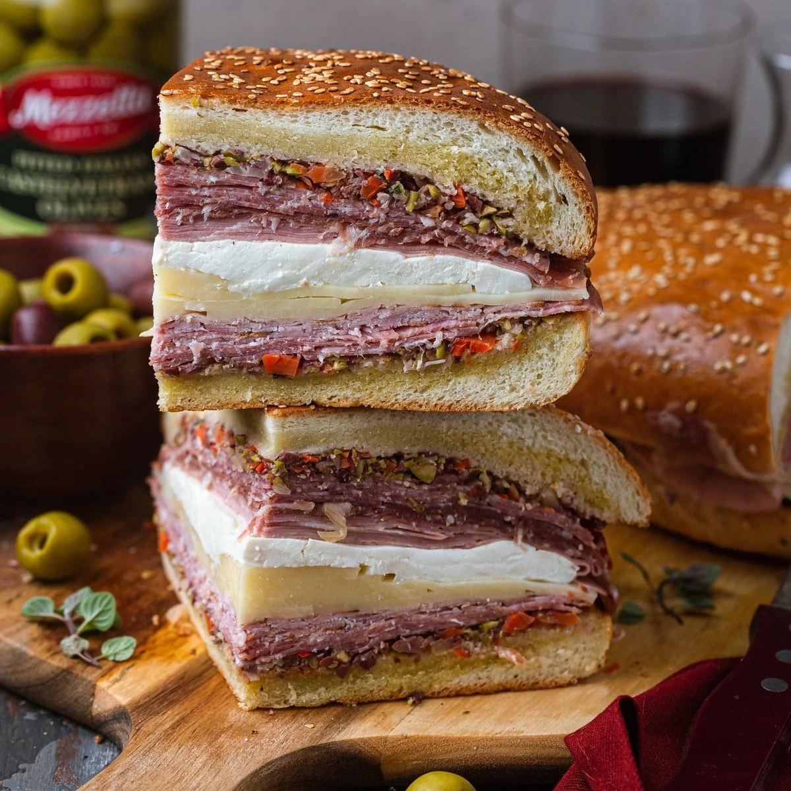

New Orleans Muffuletta

Description
These gigantic sandwiches were invented a century ago at Sicilian Deli here in New Orleans. The spicy, tangy olive salad is what really sets this meat and cheese sandwich apart. A genuine muffuletta should be made on oven-fresh Italian bread topped with sesame seeds. Be sure and use the highest-quality ingredients available; it really makes a difference! Since you're going to all the trouble of making the olive salad, consider doubling the recipe so you'll have some extra waiting around for when you get another muffuletta craving -- it keeps for at least a month! Note: Use round bread loaves for real muffuletta.
Ingredients
- 1 cup pimento-stuffed green olives, crushed
- ½ cup drained kalamata olives, crushed
- 2 cloves garlic, minced
- ¼ cup roughly chopped pickled cauliflower florets
- 2 tablespoons drained capers
- 1 tablespoon chopped celery
- 1 tablespoon chopped carrot
- ½ cup pepperocini, drained
- ¼ cup marinated cocktail onions
- ½ teaspoon celery seed
- 1 teaspoon dried oregano
- 1 teaspoon dried basil
- ¾ teaspoon ground black pepper
- ¼ cup red wine vinegar
- ½ cup olive oil
- ¼ cup canola oil
- 2 (1 pound) loaves Italian bread
- 8 ounces thinly sliced Genoa salami
- 8 ounces thinly sliced cooked ham
- 8 ounces sliced mortadella
- 8 ounces sliced mozzarella cheese
- 8 ounces sliced provolone cheese
Directions
- To Make Olive Salad: In a medium bowl, combine the green olives, kalamata olives, garlic, cauliflower, capers, celery, carrot, pepperoncini, cocktail onions, celery seed, oregano, basil, black pepper, vinegar, olive oil and canola oil. Mix together and transfer mixture into a glass jar (or other nonreactive container). If needed, pour in more oil to cover. Cover jar or container and refrigerate at least overnight.
- To Make Sandwiches: Cut loaves of bread in half horizontally; hollow out some of the excess bread to make room for filling. Spread each piece of bread with equal amounts olive salad, including oil. Layer 'bottom half' of each loaf with 1/2 of the salami, ham, mortadella, mozzarella and Provolone. Replace 'top half' on each loaf and cut sandwich into quarters.
- Serve immediately, or wrap tightly and refrigerate for a few hours; this will allow for the flavors to mingle and the olive salad to soak into the bread.
Nutrition Facts
Per Serving: 987 calories; protein 41.4g; carbohydrates 63.2g; fat 62.8g; cholesterol 97.3mg; sodium 3464.9mg.
Link